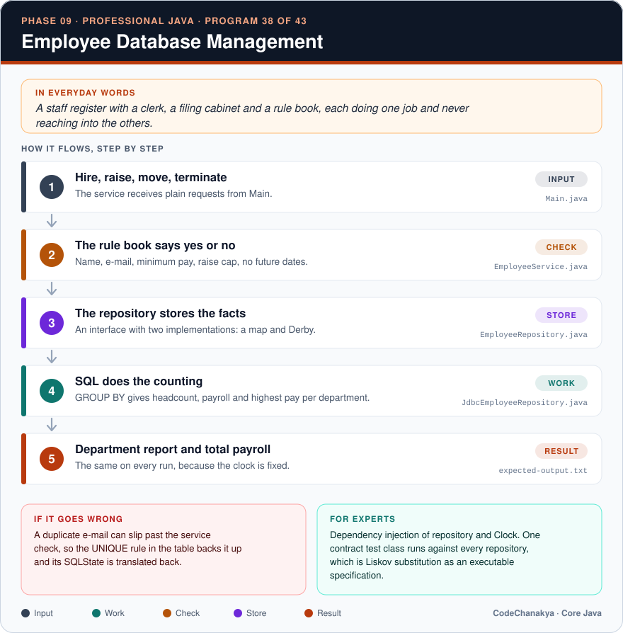

Phase 09 · Professional Java · Program 38 of 43
Employee Database Management
The problem
This Phase 9 project joins Maven, JUnit and JDBC, and adds design. Hire, look up, raise, move and remove employees, with real rules, stored in a table. The goal is code a team can change for years without breaking it.
A service holds the rules, a repository interface hides the storage, and Main wires it together. One contract test runs against both the in-memory and the database repository, and a fixed Clock keeps date rules repeatable.
See the flow
The whole program as one picture. Read it top to bottom; the colour of each card says what kind of step it is.


If you are new to coding
A staff register with a clerk, a filing cabinet and a rule book, each doing one job and never reaching into the others.
If you are learning
Follow the numbered cards from top to bottom. Open the file named on each card, run the program, and match its output to the last card.
If you are experienced
Dependency injection of repository and Clock. One contract test class runs against every repository, which is Liskov substitution as an executable specification.
Text version of the flow
- Hire, raise, move, terminate (input): The service receives plain requests from Main.
- The rule book says yes or no (check): Name, e-mail, minimum pay, raise cap, no future dates.
- The repository stores the facts (store): An interface with two implementations: a map and Derby.
- SQL does the counting (work): GROUP BY gives headcount, payroll and highest pay per department.
- Department report and total payroll (result): The same on every run, because the clock is fixed.
Read in this order
- 1EmployeeRepository.javaThe interface. Its comments are promises.
- 2JdbcEmployeeRepository.javaThe same promises, kept with SQL.
- 3EmployeeService.javaThe rules. The file to study.
- 4EmployeeRepositoryContract.javaThe tests every repository must pass.
The code
package com.codechanakya.empdb; import java.math.BigDecimal; import java.math.RoundingMode; import java.time.Clock; import java.time.LocalDate; import java.util.List; import java.util.Map; import java.util.regex.Pattern; /** * The business rules. Knows nothing about SQL: it talks to an {@link EmployeeRepository} and to a {@link Clock}. * * <p>Both are handed in through the constructor (dependency injection). A test passes an in-memory * repository and a clock frozen on one day, and the rules can be checked without a database or a calendar. */ public class EmployeeService { static final BigDecimal MINIMUM_SALARY = new BigDecimal("15000.00"); static final BigDecimal MAXIMUM_RAISE_PERCENT = new BigDecimal("20"); private static final Pattern EMAIL = Pattern.compile("^[^@\\s]+@[^@\\s]+\\.[^@\\s]+$"); private final EmployeeRepository repository; private final Clock clock; public EmployeeService(EmployeeRepository repository, Clock clock) { this.repository = repository; this.clock = clock; } public Employee hire(String name, String email, Department department, BigDecimal salary, LocalDate hired) { if (name == null || name.isBlank()) { throw new ValidationException("Name is required."); } if (email == null || !EMAIL.matcher(email).matches()) { throw new ValidationException("Not a valid e-mail address: " + email); } if (salary.compareTo(MINIMUM_SALARY) < 0) { throw new ValidationException("Salary must be at least " + MINIMUM_SALARY.toPlainString() + ", but was " + salary.setScale(2, RoundingMode.HALF_UP).toPlainString()); } if (hired.isAfter(LocalDate.now(clock))) { throw new ValidationException("Hire date " + hired + " is in the future."); } if (repository.existsByEmail(email)) { throw new DuplicateEmailException(email); } return repository.insert(Employee.draft(name.trim(), email.trim(), department, salary, hired)); } public Employee giveRaise(int id, BigDecimal percent) { if (percent.signum() <= 0 || percent.compareTo(MAXIMUM_RAISE_PERCENT) > 0) { throw new ValidationException("A raise must be above 0 and at most " + MAXIMUM_RAISE_PERCENT + " percent, but was " + percent.toPlainString()); } Employee current = get(id); BigDecimal factor = BigDecimal.ONE.add(percent.movePointLeft(2)); Employee raised = current.withSalary(current.salary().multiply(factor)); repository.update(raised); return raised; } public Employee moveTo(int id, Department department) { Employee moved = get(id).withDepartment(department); repository.update(moved); return moved; } public void terminate(int id) { if (!repository.delete(id)) { throw new EmployeeNotFoundException(id); } } public Employee get(int id) { return repository.findById(id).orElseThrow(() -> new EmployeeNotFoundException(id)); } public List<Employee> everyone() { return repository.findAll(); } public List<Employee> inDepartment(Department department) { return repository.findByDepartment(department); } public Map<Department, DepartmentStats> departmentReport() { return repository.statsByDepartment(); } public BigDecimal totalPayroll() { return repository.statsByDepartment().values().stream() .map(DepartmentStats::payroll).reduce(BigDecimal.ZERO.setScale(2), BigDecimal::add); } }
package com.codechanakya.empdb; import static org.junit.jupiter.api.Assertions.assertEquals; import static org.junit.jupiter.api.Assertions.assertFalse; import static org.junit.jupiter.api.Assertions.assertThrows; import static org.junit.jupiter.api.Assertions.assertTrue; import java.math.BigDecimal; import java.time.LocalDate; import java.util.List; import java.util.Map; import org.junit.jupiter.api.BeforeEach; import org.junit.jupiter.api.Test; /** * The promises every {@link EmployeeRepository} must keep. Each implementation gets a small subclass * that only says how to create one; the tests below are inherited and run against both. If a new * implementation breaks a promise, one of these tests says so (the L in SOLID: any implementation * can stand in for the interface). */ abstract class EmployeeRepositoryContract { protected EmployeeRepository repository; /** Builds a fresh, empty repository. */ protected abstract EmployeeRepository create(); @BeforeEach void setUpRepository() { repository = create(); } static Employee draft(String name, String email, Department department, String salary) { return Employee.draft(name, email, department, new BigDecimal(salary), LocalDate.of(2024, 5, 20)); } @Test void insertGivesEachEmployeeAnIdStartingAtOne() { Employee first = repository.insert(draft("Asha", "asha@example.com", Department.QA, "50000")); Employee second = repository.insert(draft("Bilal", "bilal@example.com", Department.QA, "51000")); assertEquals(1, first.id()); assertEquals(2, second.id()); } @Test void whatYouStoreIsWhatYouGetBack() { Employee stored = repository.insert(draft("Asha", "asha@example.com", Department.HR, "50000.5")); assertEquals(stored, repository.findById(stored.id()).orElseThrow()); assertEquals(new BigDecimal("50000.50"), stored.salary()); } @Test void findByIdOfAMissingEmployeeIsEmpty() { assertTrue(repository.findById(42).isEmpty()); } @Test void findAllIsOrderedById() { repository.insert(draft("Cara", "c@example.com", Department.SALES, "40000")); repository.insert(draft("Abe", "a@example.com", Department.SALES, "41000")); List<Employee> all = repository.findAll(); assertEquals(List.of("Cara", "Abe"), all.stream().map(Employee::name).toList()); } @Test void findByDepartmentReturnsOnlyThatDepartment() { repository.insert(draft("A", "a@example.com", Department.QA, "40000")); repository.insert(draft("B", "b@example.com", Department.HR, "41000")); repository.insert(draft("C", "c@example.com", Department.QA, "42000")); assertEquals(List.of("A", "C"), repository.findByDepartment(Department.QA).stream().map(Employee::name).toList()); assertTrue(repository.findByDepartment(Department.SALES).isEmpty()); } @Test void updateReplacesTheStoredData() { Employee stored = repository.insert(draft("Asha", "asha@example.com", Department.QA, "50000")); repository.update(stored.withSalary(new BigDecimal("55000")).withDepartment(Department.HR)); Employee reloaded = repository.findById(stored.id()).orElseThrow(); assertEquals(new BigDecimal("55000.00"), reloaded.salary()); assertEquals(Department.HR, reloaded.department()); } @Test void updateOfAMissingEmployeeFails() { Employee ghost = new Employee(77, "Ghost", "g@example.com", Department.HR, new BigDecimal("40000"), LocalDate.of(2024, 1, 1)); assertThrows(EmployeeNotFoundException.class, () -> repository.update(ghost)); } @Test void deleteReportsWhetherAnythingWasRemoved() { Employee stored = repository.insert(draft("Asha", "asha@example.com", Department.QA, "50000")); assertTrue(repository.delete(stored.id())); assertFalse(repository.delete(stored.id())); assertTrue(repository.findAll().isEmpty()); } @Test void anEmailCanBeUsedOnlyOnce() { repository.insert(draft("Asha", "asha@example.com", Department.QA, "50000")); assertThrows(DuplicateEmailException.class, () -> repository.insert(draft("Other", "asha@example.com", Department.HR, "50000"))); assertEquals(1, repository.findAll().size()); } @Test void existsByEmailIgnoresCase() { repository.insert(draft("Asha", "Asha@Example.com", Department.QA, "50000")); assertTrue(repository.existsByEmail("asha@example.com")); assertFalse(repository.existsByEmail("nobody@example.com")); } @Test void statsCoverEveryDepartmentThatHasPeople() { repository.insert(draft("A", "a@example.com", Department.QA, "40000")); repository.insert(draft("B", "b@example.com", Department.QA, "50000.50")); repository.insert(draft("C", "c@example.com", Department.HR, "30000")); Map<Department, DepartmentStats> stats = repository.statsByDepartment(); assertEquals(List.of(Department.QA, Department.HR), List.copyOf(stats.keySet())); assertEquals(new DepartmentStats(2, new BigDecimal("90000.50"), new BigDecimal("50000.50")), stats.get(Department.QA)); assertEquals(new DepartmentStats(1, new BigDecimal("30000.00"), new BigDecimal("30000.00")), stats.get(Department.HR)); } @Test void statsOfAnEmptyRepositoryAreEmpty() { assertTrue(repository.statsByDepartment().isEmpty()); } }
Only the key files are shown. The rest are in the repository.
Run it
$ ./run.sh --check
== Hiring
#1 Asha Rao asha@example.com ENGINEERING 90000.00 hired 2021-04-12
#2 Bilal Khan bilal@example.com QA 60000.00 hired 2022-01-03
#3 Chitra Nair chitra@example.com QA 72000.50 hired 2020-09-21
#4 Dev Mehta dev@example.com SALES 48000.00 hired 2023-07-17
#5 Esha Iyer esha@example.com HR 55000.00 hired 2019-11-04
#6 Farhan Ali farhan@example.com ENGINEERING 84000.00 hired 2024-02-26
== Rules that say no
Duplicate e-mail: E-mail already in use: ASHA@example.com
Low salary: Salary must be at least 15000.00, but was 9000.00
Bad e-mail: Not a valid e-mail address: hari-at-example
Future hire date: Hire date 2026-01-01 is in the future.
Raise too big: A raise must be above 0 and at most 20 percent, but was 35
Unknown employee: No employee with id 99
== Changes
Raise 10% for #2 : 66000.00
Move #4 to ENGINEERING: ENGINEERING
Terminated #5, headcount now 5
== Engineering team
#1 Asha Rao asha@example.com ENGINEERING 90000.00 hired 2021-04-12
#4 Dev Mehta dev@example.com ENGINEERING 48000.00 hired 2023-07-17
#6 Farhan Ali farhan@example.com ENGINEERING 84000.00 hired 2024-02-26
== Department report
ENGINEERING people 3 payroll 222000.00 average 74000.00 highest 90000.00
QA people 2 payroll 138000.50 average 69000.25 highest 72000.50
Total payroll: 360000.50
OK: output matches expected-output.txt
This is the real output from OpenJDK 21.0.13 on Linux. GitHub Actions confirmed the program on Linux with Java 21 and 25, using real Maven and the real JUnit jar. It has not yet been run on Windows or macOS.
Try it yourself
- BeginnerAdd a department and hire into it.
- BeginnerAdd a search by name prefix.
- BeginnerChange the clock and predict the failures.
- IntermediateAdd an average salary per department.
- IntermediateCap a raise by a maximum salary, test first.
- ChallengeWrite a counting decorator without changing any class.
Hints and solutions are in the exercises and solutions folders. Try first.
Break it on purpose
Three files: a duplicate in a UNIQUE column, a salary the CHECK rule refuses, and assigning to a record field. The README in the broken folder explains each one.